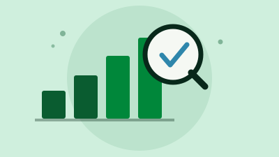

Blog
Te damos la bienvenida al
Blog de Omar Lengerke
Elige el tema que más te guste.
-
Educación
Lo que se logró en las UTS y lo que falta por construir en Santander.
-
Territorio
Recorridos, municipios y las conversaciones que se dan en cada visita.
-
Transparencia
Cuentas claras sobre la gestión y las decisiones de cara a la gente.
-
Comunidad
Historias de las personas y organizaciones que hacen parte del proyecto.
Recomendados
-

La UTS rinde cuentas: 98% de sus estudiantes ya no paga matrícula
En su rendición de cuentas de 2026, la UTS mostró cifras de gratuidad, calidad académica, infraestructura y finanzas durante la rectoría de Omar Lengerke Pérez.
Leer artículo -

Después de 62 años, las UTS pasan de unidad tecnológica a universitaria
El Ministerio de Educación aprobó el cambio de carácter académico de las UTS, que ahora son la Institución Universitaria Tecnológica de Santander.
Leer artículo -

Las UTS logran la Acreditación Institucional en Alta Calidad
El Ministerio de Educación le dio a las UTS el reconocimiento más alto que existe para una institución de educación superior en Colombia, por seis años.
Leer artículo
Populares
-
1

Omar Lengerke deja la rectoría de las UTS tras casi 12 años
El Consejo Directivo aceptó su renuncia en medio de la disputa por la elección del próximo rector.
-
2
Después de 62 años, las UTS pasan de unidad tecnológica a universitaria
-
3
Las UTS logran la Acreditación Institucional en Alta Calidad
-
4
La UTS rinde cuentas: 98% de sus estudiantes ya no paga matrícula

Suscríbete a nuestro blog
Recibe cada mes un boletín con los artículos de tu interés.